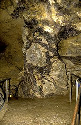

| In English |
| In English |
Flußspat
Fluorit
Fluorit oder (CaF2) Flußspat ist ein Salz oder genauer eine ionische Verbindung zwischen dem Halogenid Flur und Kalzium. Man findet es in vielen verschiedenen Farben, einschließlich Fablos, Weiß, Lila, Green, Gelb, Orange, Rot, Rosa, Braun und Schwarzblau. Es wird manchmal auch das farbenreichste Mineral der Welt genannt. Die am häufigsten vorkommenden farben sind Lila, Grün und Blau, und das Mineral ist sehr häufig gebändert. Das spat im Namen kommt vom spatigen Bruch, das Mineral bildet Ebene Fächen wenn es zerbrochen wird.
Fluorit wird in vielen industriellen prozessen verwendet, insbesonder bei der Verhüttung und Glasproduktion. Es verringert den Schmelzpunt und spart dadurch Energie. Es wird als Flussmittel in der Metallverarbeitung eingesetzt, weil es den Fluß, also die Fließfähigkeit der Schmelze, erhöht. Diese Verwendung war auch namensgebend. Fluor wird zur Zahnpasta zugegeben und der herstellung von Fluorchlorkohlenwasserstoffen (FCKW) benötigt. Diese letzte Gruppe an Substanzen, die als Kühlmittel in Kühlschränken, als Triebmittel in Spraydosen, und in Trockenreinigungen eingesetzt wurden, ist allerdings ziemlich aus der Mode gekommen, seit entdeckt wurde dass sie die Ozonschicht zerstören. Fluor wird auch für dei herstellung von Plastik und Raketentreibstoff benötigt. Wenn er die richtige Farbe und Bänderung hat wird Fluorit auch gerne als Halbedelstein für Schmuck verwendet. Man kann auch Gegenstände wie Schüsseln und Vasen daraus herstellen. Als Mineral ist es bei Mineraliensammlern äußerst beliebt.
|  |
Bild: Blue John ist eine blaue Varietät von Fluorit die man in der
 Treak Cliff Cavern & Mine Treak Cliff Cavern & Mine Castleton Castleton |
Fluorit ist ein sehr weit verbreitetes Mineral, das primär in Graniten und anderen Vulkangesteinen vorkommt. Es kann auch in geringen Mengen in Kalksteinen und Dolomiten vorkommen. Doch beide Male ist der Gehalt an Fluorit dermassen gering, dass er nicht ökonomisch genutzt werden kann. Fluorit wird in Form von hydrothermalen Gängen abgebaut, die man typischerweise bei Granitintrusionen finden kann. Das eindringende Magma enthält Fluorit, zudem erhitzt es das Umgebungsgestein und das Grundwasser. Dadurch bilden sich Konvektionszellen, in denen das Wasser zirkuliert und dabei löst es diversee Mineralien aus dem Gestein und lagert sie in Klüften wieder ab. Diese Klüfte entstehen durch tektonischen Kräfte der Intrusion. Die Gänge können sehr unterschiedliche Mineralien und Erze enthalten. Fluorit Gänge enthalten meist auch noch größere mengen Baryt (BaSO4), auch Schwerspat genannt. Daneben findet man Kalzit, Dolomit, Pyrit, Markasit, Zinkblende, Bleiglanz, Kupferkies, und Uran.
Der Fluotitabbau muß also den Gängen folgen. Diese sind meist nur einige Meter dick und ihre Dicke kann sehr stark variieren. So kann es passieren dass man beim Abbau viele Meter einer geschlossenen Kluft folgen muss bis diese sich wieder öffnet. Das ist übrigens auch eine Erklärung des Bergmannsgruß Glück auf. Meist nehmen Unkundige an, dass damit eine sichere Rückkehr an die Oberfläche gemeint ist. Tatsächlich wünscht man dem Bergmann Glück, dass seine Kluft auf geht, sich weitet, er also den wertvollen Stoff findet.
 Auf Google nach "Flußspat" suchen...
Auf Google nach "Flußspat" suchen... Fluorit - Wikipedia
(visited: 22-MAY-2011)
Fluorit - Wikipedia
(visited: 22-MAY-2011) FLUORITE (Calcium Fluoride)
(visited: 22-MAY-2011)
(
FLUORITE (Calcium Fluoride)
(visited: 22-MAY-2011)
( )
)